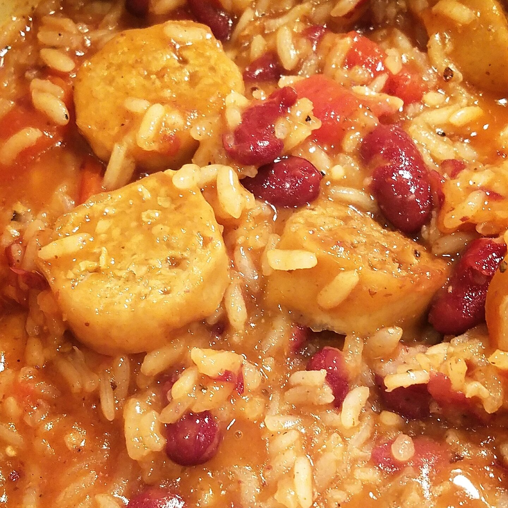
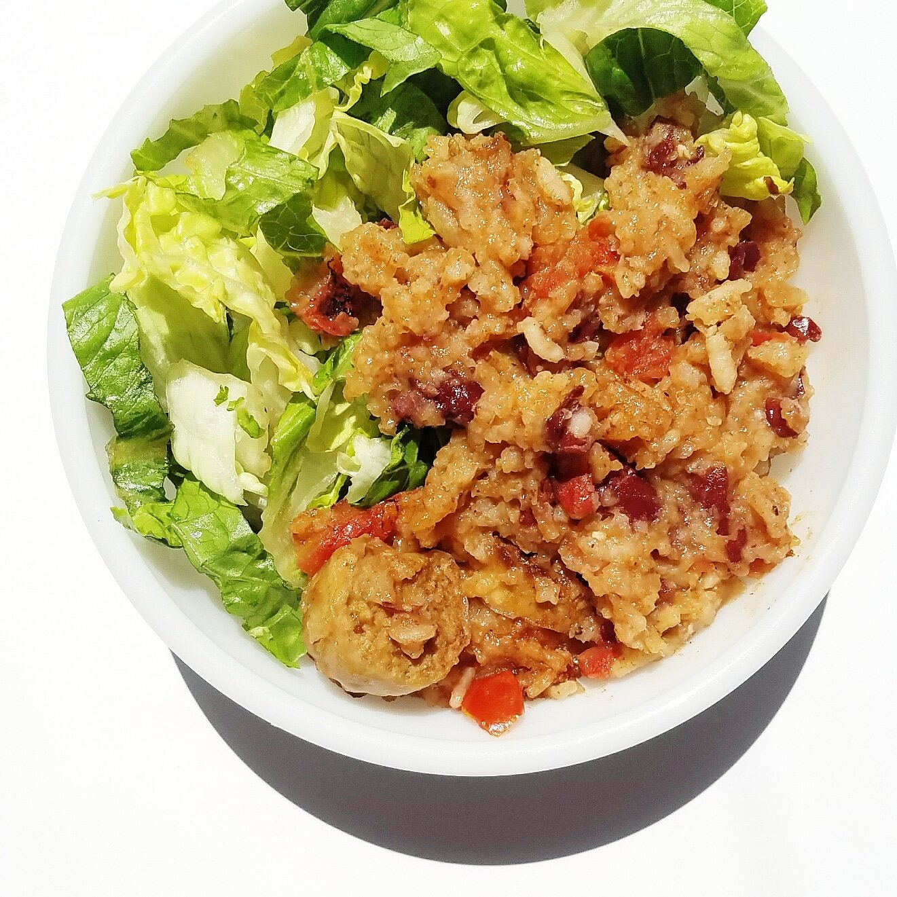

Vegan Red Beans and Rice with Sausage (gf, sf)


Deep dive with me in this vegan red beans and rice with sausage. The new vegan Beyond Meat sausage is blowing me and my expectations away. This meal is so savory, comforting, and extremely simple to make. It is vegan, gluten free, soy free, and packed with protein!
I don't know what I expected from this Beyond Meat sausage, but it definitely wasn't this. Innovation is amazing. Most vegan sausage are okay...but not even close to "real sausage". They're usually soft and dry if you ask me, so I've never been big on getting them. It's not necessary. This Beyond Meat sausage is so realistic it's a little freaky. It has an exterior crispy casing like regular sausage. It oozes oils and grease as you cook it which is amaaaazing. And it's full of flavor of moisture! It's got me excited and feeling ~☆*°inSpIred~~*°☆ in terms of creating recipes with it. They also have regular brats and sweet Italian flavor.
This recipe is a true comfort food, all while being healthy. This is very win-win. You get tons of protein from the beans and sausage. There's no soy or sugar or oils. The flavor is savory with a little kick that keeps you coming back for another bite. This is perfect after a long day or a tough workout to help you feel recharged and satisfied.
This vegan red beans and rice recipe is so simple to follow and you will already have most ingredients/spices on hand. It can be made in a single pot. Gotta love easy cleanup! Not to mention, it gets the whole house smelling delicious and soothing.
Try out this vegan red beans and rice yourself and let me know what you think! Have you tried the new Beyond Meat sausages yet? I'm interested to see how others are using them!
Vegan Red Beans and Rice with Sausage
Serves: 6
-
3 Hot Italian Beyond Meat sausages
-
1.5 cups uncooked rice
-
3 cups vegetable broth
-
1 can kidney beans (rinsed and drained)
-
1 cup fire roasted tomatoes
-
3 bay leaves
-
2 tsp minced garlic
-
1 tsp cumin
-
1 tsp paprika
-
1 tsp chili powder
-
1/2 tsp cayenne pepper
-
salt & pepper to taste
Slice the sausages and cook in a pan or large pot on medium heat until lightly browned (about 8-9 minutes). Once the sausage is browned, place the sausage in a large pot with the remaining ingredients. Bring to a boil, then let simmer until the liquid cooks down and the rice is fully cooked, about 20-25 minutes. Enjoy!